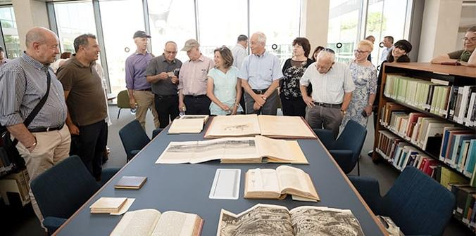
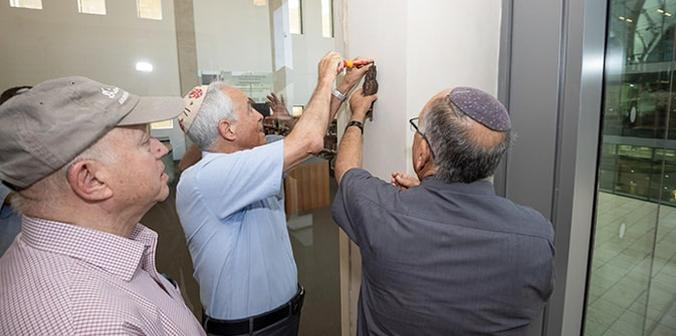
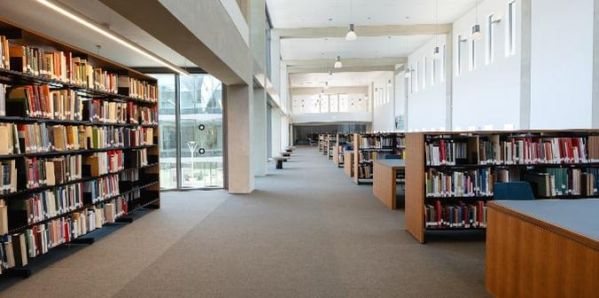
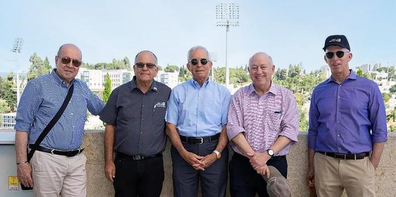

הנהלת קרן מנדל עם אוסף ספרים נדירים בספרייה (צילום: דפנה גזית)
הספרייה הלאומית והארכיב הלאומי לארכיאולוגיה של ארץ ישראל ע"ש ג'ק, ג'וזף ומורטון מנדל נחנכו רשמית בטקס קביעת מזוזה שנערך ב-16 ביולי 2023 בקריה החדשה של רשות העתיקות בירושלים. הספריה והארכיב ע"ש מנדל הם חלק מהקריה הלאומית החדשה לארכאולוגיה של ארץ ישראל ע"ש ג'יי וג'יני שוטנשטיין, שהוקמה לאחרונה בירושלים ותשמש כמקום מושבם של רשות העתיקות והמרכז הלאומי לחינוך, מחקר ושימור.
הספרייה תכיל כ-60,000 כותרים, בהם 250 ספרים נדירים ויותר מ-1,000 כתבי עת. הארכיב הסמוך יכיל את ארכיון רשות העתיקות, את ארכיון המנדט הבריטי וכן דוחות של חפירות ארכאולוגיות, ארכיונים חזותיים, מפות, היתרים ותוכניות. הספרייה והארכיב יהיו הגדולים מסוגם במזרח התיכון וישמשו כמרכז מחקר ראשון במעלה לארכאולוגיה ולהיסטוריה של ארץ ישראל. הספריה תהיה פתוחה לציבור וחומרי הארכיב יעברו דיגיטציה ויונגשו דיגיטלית.
 פרופסור יהודה ריינהרץ ואלי אסקוזידו קובעים מזוזה. עוד בתמונה: סטיב הופמן (צילום: דפנה גזית)
בטקס צנוע קבע
פרופסור יהודה ריינהרץ, נשיא קרן מנדל, מזוזה בכניסה לספרייה ע"ש מנדל. סטיב הופמן, יו"ר קרן מנדל, קרא את ברכת ש"החיינו".
"התרבות היא מה שמקיים אותנו כבני אדם", אמר פרופסור ריינהרץ. "זו הסיבה שמדעי הרוח כל כך חשובים לנו במנדל. הספרייה הראשונה בהיסטוריה הוקמה לפני כ-5,000 שנה, לא רחוק מהמקום שבו אנו עומדים, והאנושות שימרה מאז ומעולם את ההיסטוריה שלה. אני שמח שקרן מנדל תרמה לבניין הזה, ואני עצוב רק על שמורט מנדל אינו כאן איתנו. ביקרנו יחד עמו בכל שלבי הבנייה, ואנו שמחים להיות שותפיכם במפעל החשוב הזה".

הספרייה הלאומית לארכיאולוגיה של ארץ ישראל ע"ש ג'ק, ג'וזף ומורטון מנדל (צילום: דפנה גזית)
אלי אסקוזידו, מנכ"ל רשות העתיקות, אמר בטקס: "אנו גאים לעמוד כאן היום, יחד עם שותפינו היקרים מקרן מנדל, לקביעת המזוזה בכניסה לספרייה הלאומית לארכיאולוגיה של ארץ ישראל ע"ש ג'ק, ג'וזף ומורטון מנדל. היום סיימנו משימה היסטורית שתשרת את הציבור לדורות הבאים: הספרייה, הגדולה מסוגה במזרח התיכון, תהיה מרכז לשימור ולאיסוף של ידע, לימוד ומחקר עבור סטודנטים וחוקרים מכל רחבי העולם. מאות אלפי המבקרים בקריה יראו את הספרייה המרהיבה הזאת מיד עם כניסתם למתחם. תודה על האמונה והשותפות בהגשמת החזון שלנו".
הקריה הלאומית לארכיאולוגיה של ארץ ישראל ע"ש ג'יי וג'יני שוטנשטיין בירושלים עוצבה על-ידי האדריכל הנודע משה ספדיה ותכיל קרוב לשני מיליון ממצאים ארכיאולוגיים, בהם 15,000 מגילות ים המלח. יהיו בה גם מעבדות שימור ושיקום פתוחות לציבור, אודיטוריום, גלריות לימוד מיוחדות, מרכז חינוך ולמידה, גינות תצוגה על הגג, בית קפה ועוד. הקריה, ששטחה 36,000 מ"ר, שוכנת בסמוך למוזיאון ישראל ולמוזיאון ארצות המקרא ותהיה בית פתוח למבקרים מהארץ ומחו"ל, שיוכלו לראות את אוצרות התרבות שנחפרו בארץ ולשמוע מפי ארכיאולוגים ומדענים שחופרים, חוקרים ומשחזרים אותן.

מימין לשמאל: שגיא מלמד, סמנכ"ל פיתוח משאבים, רשות העתיקות; סטיבן הופמן, יו"ר מועצת המנהלים, קרן ג'ק, ג'וזף ומורטון מנדל; פרופסור יהודה רייהרץ, נשיא ו-CEO, קרן ג'ק, ג'וזף ומורטון מנדל; אלי אסקוזידו, מנכ"ל רשות העתיקות, ומשה ויגדור, מנכ"ל קרן מנדל-ישראל (צילום: דפנה גזית)
{kind=link}
{kind=link}
{kind=link}
{kind=link}